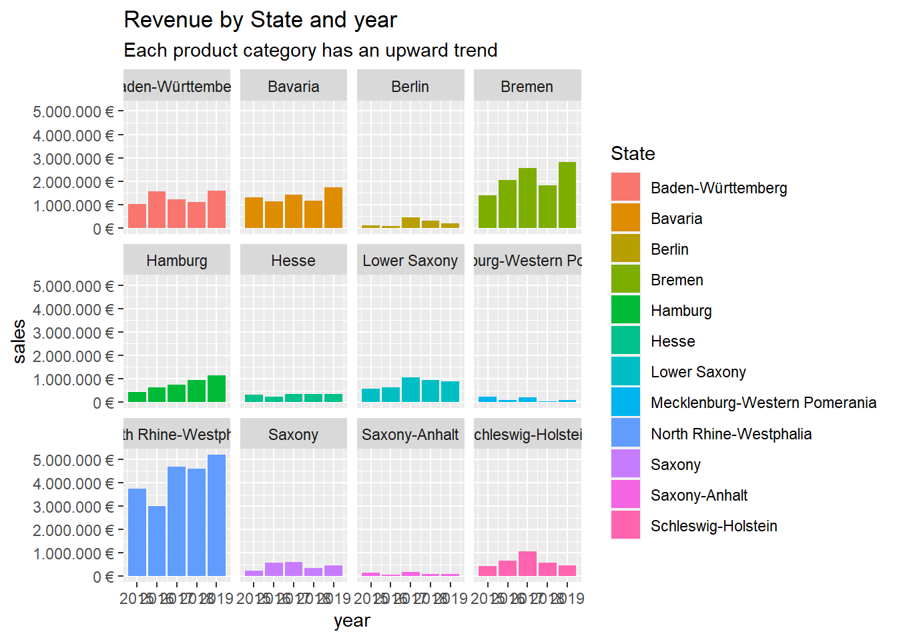
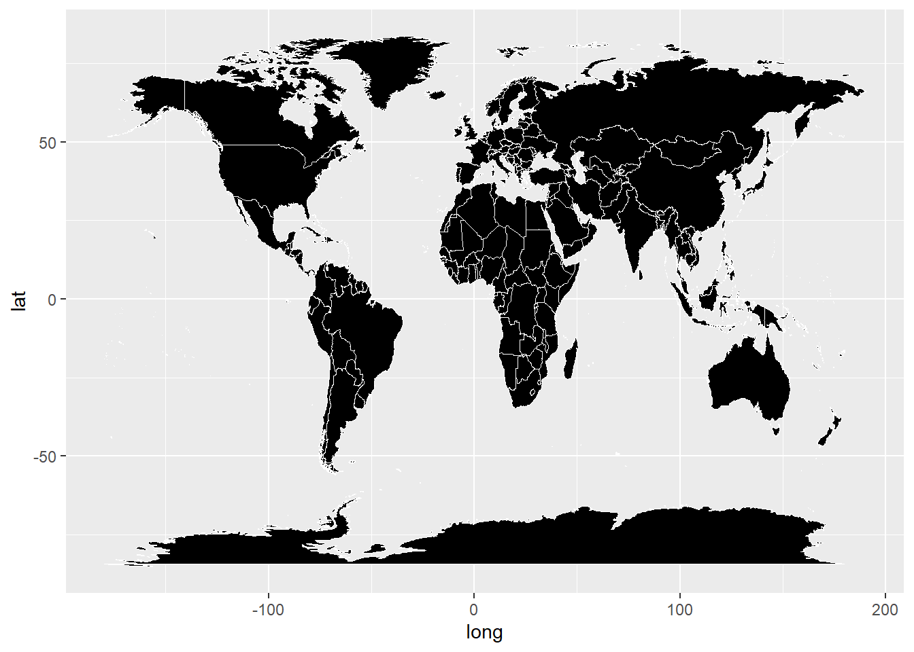
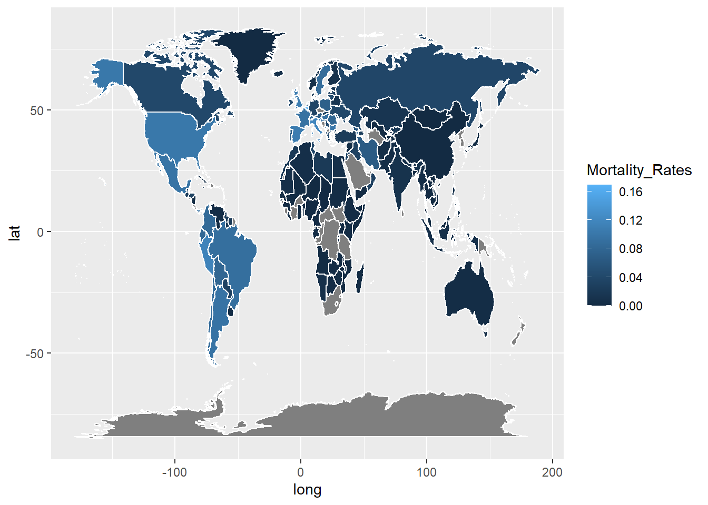

Journal (reproducible report)
Hikmat Naim
2021-01-05
1 Intro to the tidyverse: Challenge
1.1 importing libraries
library(tidyverse)
library(readxl)
library(lubridate)
library("writexl")1.2 importing data
bikes_tbl <- readxl:: read_excel(path = "bikes.xlsx")
orderlines_tbl <- readxl::read_excel("orderlines.xlsx")
bikeshops_tbl <- readxl::read_excel("bikeshops.xlsx")1.3 Examining Data
1.3.1 Orderlines Table(orderlines_tbl):
orderlines_tbl## # A tibble: 15,644 x 7
## ...1 order.id order.line order.date customer.id product.id quantity
## <chr> <dbl> <dbl> <dttm> <dbl> <dbl> <dbl>
## 1 1 1 1 2015-01-07 00:00:00 2 2681 1
## 2 2 1 2 2015-01-07 00:00:00 2 2411 1
## 3 3 2 1 2015-01-10 00:00:00 10 2629 1
## 4 4 2 2 2015-01-10 00:00:00 10 2137 1
## 5 5 3 1 2015-01-10 00:00:00 6 2367 1
## 6 6 3 2 2015-01-10 00:00:00 6 1973 1
## 7 7 3 3 2015-01-10 00:00:00 6 2422 1
## 8 8 3 4 2015-01-10 00:00:00 6 2655 1
## 9 9 3 5 2015-01-10 00:00:00 6 2247 1
## 10 10 4 1 2015-01-11 00:00:00 22 2408 1
## # ... with 15,634 more rows1.3.2 glimpse(orderlines_tbl):
glimpse(orderlines_tbl)## Rows: 15,644
## Columns: 7
## $ ...1 <chr> "1", "2", "3", "4", "5", "6", "7", "8", "9", "10", "11"...
## $ order.id <dbl> 1, 1, 2, 2, 3, 3, 3, 3, 3, 4, 5, 5, 5, 5, 6, 6, 6, 6, 7...
## $ order.line <dbl> 1, 2, 1, 2, 1, 2, 3, 4, 5, 1, 1, 2, 3, 4, 1, 2, 3, 4, 1...
## $ order.date <dttm> 2015-01-07, 2015-01-07, 2015-01-10, 2015-01-10, 2015-0...
## $ customer.id <dbl> 2, 2, 10, 10, 6, 6, 6, 6, 6, 22, 8, 8, 8, 8, 16, 16, 16...
## $ product.id <dbl> 2681, 2411, 2629, 2137, 2367, 1973, 2422, 2655, 2247, 2...
## $ quantity <dbl> 1, 1, 1, 1, 1, 1, 1, 1, 1, 1, 1, 2, 1, 1, 1, 1, 1, 1, 1...1.4 Joining Data
1.4.1 Orderlines Table & Bikes Table joined data by the product id & bike id:
left_join(orderlines_tbl, bikes_tbl, by = c("product.id" = "bike.id"))## # A tibble: 15,644 x 15
## ...1 order.id order.line order.date customer.id product.id quantity
## <chr> <dbl> <dbl> <dttm> <dbl> <dbl> <dbl>
## 1 1 1 1 2015-01-07 00:00:00 2 2681 1
## 2 2 1 2 2015-01-07 00:00:00 2 2411 1
## 3 3 2 1 2015-01-10 00:00:00 10 2629 1
## 4 4 2 2 2015-01-10 00:00:00 10 2137 1
## 5 5 3 1 2015-01-10 00:00:00 6 2367 1
## 6 6 3 2 2015-01-10 00:00:00 6 1973 1
## 7 7 3 3 2015-01-10 00:00:00 6 2422 1
## 8 8 3 4 2015-01-10 00:00:00 6 2655 1
## 9 9 3 5 2015-01-10 00:00:00 6 2247 1
## 10 10 4 1 2015-01-11 00:00:00 22 2408 1
## # ... with 15,634 more rows, and 8 more variables: model <chr>,
## # model.year <dbl>, frame.material <chr>, weight <dbl>, price <dbl>,
## # category <chr>, gender <chr>, url <chr>bike_orderlines_joined_tbl <- orderlines_tbl %>%
left_join(bikes_tbl, by = c("product.id" = "bike.id")) %>%
left_join(bikeshops_tbl, by = c("customer.id" = "bikeshop.id"))
bike_orderlines_joined_tbl %>% glimpse()## Rows: 15,644
## Columns: 19
## $ ...1 <chr> "1", "2", "3", "4", "5", "6", "7", "8", "9", "10", "...
## $ order.id <dbl> 1, 1, 2, 2, 3, 3, 3, 3, 3, 4, 5, 5, 5, 5, 6, 6, 6, 6...
## $ order.line <dbl> 1, 2, 1, 2, 1, 2, 3, 4, 5, 1, 1, 2, 3, 4, 1, 2, 3, 4...
## $ order.date <dttm> 2015-01-07, 2015-01-07, 2015-01-10, 2015-01-10, 201...
## $ customer.id <dbl> 2, 2, 10, 10, 6, 6, 6, 6, 6, 22, 8, 8, 8, 8, 16, 16,...
## $ product.id <dbl> 2681, 2411, 2629, 2137, 2367, 1973, 2422, 2655, 2247...
## $ quantity <dbl> 1, 1, 1, 1, 1, 1, 1, 1, 1, 1, 1, 2, 1, 1, 1, 1, 1, 1...
## $ model <chr> "Spectral CF 7 WMN", "Ultimate CF SLX Disc 8.0 ETAP"...
## $ model.year <dbl> 2021, 2020, 2021, 2019, 2020, 2020, 2020, 2021, 2020...
## $ frame.material <chr> "carbon", "carbon", "carbon", "carbon", "aluminium",...
## $ weight <dbl> 13.80, 7.44, 14.06, 8.80, 11.50, 8.80, 8.20, 8.85, 1...
## $ price <dbl> 3119, 5359, 2729, 1749, 1219, 1359, 2529, 1559, 3899...
## $ category <chr> "Mountain - Trail - Spectral", "Road - Race - Ultima...
## $ gender <chr> "female", "unisex", "unisex", "unisex", "unisex", "u...
## $ url <chr> "https://www.canyon.com/en-de/mountain-bikes/trail-b...
## $ name <chr> "AlexandeRad", "AlexandeRad", "WITT-RAD", "WITT-RAD"...
## $ location <chr> "Hamburg, Hamburg", "Hamburg, Hamburg", "Bremen, Bre...
## $ lat <dbl> 53.57532, 53.57532, 53.07379, 53.07379, 48.78234, 48...
## $ lng <dbl> 10.015340, 10.015340, 8.826754, 8.826754, 9.180819, ...bike_orderlines_wrangled_city_separated_tbl <- bike_orderlines_joined_tbl %>%
# 5.1 Separate category name
separate(col = category,
into = c("category.1", "category.2", "category.3"),
sep = " - ") %>%
# Separate city and state
separate(col = location,
into = c("City", "State"),
sep = ", ")%>%
# 5.2 Add the total price (price * quantity)
# Add a column to a tibble that uses a formula-style calculation of other columns
mutate(total.price = quantity* price) %>%
# 5.3 Optional: Reorganize. Using select to grab or remove unnecessary columns
# 5.3.1 by exact column name
select(-...1, -gender) %>%
# 5.3.2 by a pattern
# You can use the select_helpers to define patterns.
# Type ?ends_with and click on Select helpers in the documentation
select(-ends_with(".id"))%>%
# 5.3.3 Actually we need the column "order.id". Let's bind it back to the data
bind_cols(bike_orderlines_joined_tbl %>% select(order.id)) %>%
# 5.3.4 You can reorder the data by selecting the columns in your desired order.
# You can use select_helpers like contains() or everything()
select(order.id, contains("order"), contains("model"), contains("category"),
price, quantity, total.price,
everything()) %>%
# 5.4 Rename columns because we actually wanted underscores instead of the dots
# (one at the time vs. multiple at once)
rename(bikeshop = name) %>%
set_names(names(.) %>% str_replace_all("\\.", "_"))1.5 Sales by Year and State
1.5.1 Step 1 - Manipulate
bike_orderlines_wrangled_city_separated_tbl$month=NA
bike_orderlines_wrangled_city_separated_tbl$year=NA
for(i in 1:dim(bike_orderlines_wrangled_city_separated_tbl)[1]){
l=unlist(str_split(bike_orderlines_wrangled_city_separated_tbl$order_date[i],"-"))
bike_orderlines_wrangled_city_separated_tbl$month[i]=as.integer(l[2])
bike_orderlines_wrangled_city_separated_tbl$year[i]=as.integer(l[1])
}
sales_by_state_year_tbl <-bike_orderlines_wrangled_city_separated_tbl %>%
select(year,month, total_price, State) %>%
group_by(State, year) %>%
summarise(sales = sum(total_price)) %>%
ungroup() %>%
mutate(sales_text = scales::dollar(sales, big.mark = ".",
decimal.mark = ",",
prefix = "",
suffix = " ???"))
theme(axis.text.x = element_text(angle = 45, hjust = 1)) +
labs(
title = "States revenue by year",
x = "", # Override defaults for x and y
y = "Revenue"
)## List of 4
## $ axis.text.x:List of 11
## ..$ family : NULL
## ..$ face : NULL
## ..$ colour : NULL
## ..$ size : NULL
## ..$ hjust : num 1
## ..$ vjust : NULL
## ..$ angle : num 45
## ..$ lineheight : NULL
## ..$ margin : NULL
## ..$ debug : NULL
## ..$ inherit.blank: logi FALSE
## ..- attr(*, "class")= chr [1:2] "element_text" "element"
## $ x : chr ""
## $ y : chr "Revenue"
## $ title : chr "States revenue by year"
## - attr(*, "class")= chr [1:2] "theme" "gg"
## - attr(*, "complete")= logi FALSE
## - attr(*, "validate")= logi TRUE1.5.2 Step 2 - Visualize
sales_by_state_year_tbl%>%
ggplot(aes(x = year, y = sales, fill = State)) +
geom_col() + # Run up to here to get a stacked bar plot
facet_wrap(~ State) +
scale_y_continuous(labels = scales::dollar_format(big.mark = ".",
decimal.mark = ",",
prefix = "",
suffix = " €")) +
labs(
title = "Revenue by State and year",
subtitle = "Each product category has an upward trend",
fill = "State" # Changes the legend name
)
theme(axis.text.x = element_text(angle = 45, hjust = 1)) +
labs(
title = "States revenue by year",
x = "", # Override defaults for x and y
y = "Revenue"
)## List of 4
## $ axis.text.x:List of 11
## ..$ family : NULL
## ..$ face : NULL
## ..$ colour : NULL
## ..$ size : NULL
## ..$ hjust : num 1
## ..$ vjust : NULL
## ..$ angle : num 45
## ..$ lineheight : NULL
## ..$ margin : NULL
## ..$ debug : NULL
## ..$ inherit.blank: logi FALSE
## ..- attr(*, "class")= chr [1:2] "element_text" "element"
## $ x : chr ""
## $ y : chr "Revenue"
## $ title : chr "States revenue by year"
## - attr(*, "class")= chr [1:2] "theme" "gg"
## - attr(*, "complete")= logi FALSE
## - attr(*, "validate")= logi TRUE1.6 Writing Files
1.6.1 Excel
library("writexl")
sales_by_state_year_tbl %>%
write_xlsx("bike_orderlines.xlsx")1.6.2 CSV
sales_by_state_year_tbl%>%
write_csv("bike_orderlines.csv")1.6.3 RDS
sales_by_state_year_tbl %>%
write_rds("bike_orderlines.rds")2 Data Acquisition: Challenge
2.1 importing libraries
library(RSQLite)
library(dplyr)
library(httr)
library(glue)
library(jsonlite)
library(keyring)
library(rvest)
library(owmr)
library(stringr)
library(purrr)
library(xopen)
library(stringi)
library(tibble)2.2 Task(1): Getting some data via an API
2.2.1 Current Weather Data API of London
resp = GET("http://api.openweathermap.org/data/2.5/weather?q=London,uk&APPID=a1e8fec679a9d4e32d525dc165c0af27")
rawToChar(resp$content)## [1] "{\"coord\":{\"lon\":-0.1257,\"lat\":51.5085},\"weather\":[{\"id\":803,\"main\":\"Clouds\",\"description\":\"broken clouds\",\"icon\":\"04n\"}],\"base\":\"stations\",\"main\":{\"temp\":272.23,\"feels_like\":267.33,\"temp_min\":271.48,\"temp_max\":273.15,\"pressure\":1018,\"humidity\":86},\"visibility\":6000,\"wind\":{\"speed\":3.6,\"deg\":250},\"clouds\":{\"all\":75},\"dt\":1610053302,\"sys\":{\"type\":1,\"id\":1414,\"country\":\"GB\",\"sunrise\":1610006666,\"sunset\":1610035728},\"timezone\":0,\"id\":2643743,\"name\":\"London\",\"cod\":200}"OWM_API_KEY="a1e8fec679a9d4e32d525dc165c0af27"
owmr_settings(OWM_API_KEY)2.2.2 Weather Data of Alexandria, Egypt
2.2.2.1 Current Weather Data API
(Alexandria_Egypt <- search_city_list("Alexandria","EG")) %>%
as.list()## $id
## [1] 361058
##
## $nm
## [1] "Alexandria"
##
## $lat
## [1] 31.21564
##
## $lon
## [1] 29.95527
##
## $countryCode
## [1] "EG"2.2.2.2 The forecast updates API
Alexandria_EG_forecast <- get_forecast("London", units = "metric") %>%
owmr_as_tibble()
Alexandria_EG_forecast[, 1:10]## # A tibble: 40 x 10
## dt_txt temp pressure humidity temp_min temp_max weather_id weather_main
## <chr> <dbl> <dbl> <dbl> <dbl> <dbl> <dbl> <chr>
## 1 2021-~ -0.45 1018 94 -0.45 0.13 803 Clouds
## 2 2021-~ -0.08 1016 94 -0.08 0.18 803 Clouds
## 3 2021-~ 0.14 1016 96 0.14 0.22 804 Clouds
## 4 2021-~ 0.570 1017 94 0.570 0.580 804 Clouds
## 5 2021-~ 2.28 1018 83 2.28 2.28 804 Clouds
## 6 2021-~ 2.8 1018 78 2.8 2.8 804 Clouds
## 7 2021-~ 1.32 1020 89 1.32 1.32 803 Clouds
## 8 2021-~ 0.72 1022 93 0.72 0.72 802 Clouds
## 9 2021-~ 0.46 1024 96 0.46 0.46 802 Clouds
## 10 2021-~ 0.31 1024 96 0.31 0.31 801 Clouds
## # ... with 30 more rows, and 2 more variables: weather_description <chr>,
## # weather_icon <chr>2.3 Task(2)
2.3.1 Bike data table:
#Wrap it into a function
url= "https://www.rosebikes.de/fahrräder/mtb"
get_bike_data <- function(url) {
html_bike_category <- read_html(url)
# Get the URLs
bike_url_tbl <- html_bike_category %>%
html_nodes(css = ".catalog-category-bikes__title-text") %>%
html_text()%>%
enframe(name = "No.", value = "Bike.Name")
bike_database_tbl<-bike_url_tbl%>%
mutate(price=html_bike_category%>%
html_nodes(css =".catalog-category-bikes__price-title")%>%
html_text())
}
bike_tableout<-get_bike_data(url)
bike_tableout## # A tibble: 9 x 3
## No. Bike.Name price
## <int> <chr> <chr>
## 1 1 "\nGROUND CONTROL\n" "\nab 1.699,00 €\n"
## 2 2 "\nROOT MILLER\n" "\nab 1.999,00 €\n"
## 3 3 "\nPIKES PEAK\n" "\nab 3.099,00 €\n"
## 4 4 "\nTHE BRUCE\n" "\n"
## 5 5 "\nCOUNT SOLO\n" "\n"
## 6 6 "\nPSYCHO PATH\n" "\nab 1.849,00 €\n"
## 7 7 "\nTHRILL HILL\n" "\nab 2.599,00 €\n"
## 8 8 "\nTHRILL HILL TRAIL\n" "\nab 2.899,00 €\n"
## 9 9 "\nSOUL FIRE\n" "\nab 2.149,00 €\n"saveRDS(bike_tableout,"Data_Acquisition_Challenge.rds")3 Data Wrangling: Challenge
3.1 Importing Libraries
library(vroom)
library(tidyverse)
library(data.table)
library(tictoc)3.2 Importing Data
3.2.1 Patents:
col_types <- list(
id = col_character(),
date = col_date("%Y-%m-%d"),
num_claims = col_double()
)
patent_tbl <- vroom(
file = "patent.tsv",
delim = "\t",
col_types = col_types,
na = c("", "NA", "NULL")
)
patent_tbl## # A tibble: 327,014 x 3
## id date num_claims
## <chr> <date> <dbl>
## 1 8621662 2014-01-07 11
## 2 8621663 2014-01-07 6
## 3 8621664 2014-01-07 10
## 4 8621665 2014-01-07 18
## 5 8621666 2014-01-07 7
## 6 8621667 2014-01-07 9
## 7 8621668 2014-01-07 21
## 8 8621669 2014-01-07 19
## 9 8621670 2014-01-07 8
## 10 8621671 2014-01-07 18
## # ... with 327,004 more rows3.2.2 Assignee:
col_types_assignee <- list(
id = col_character(),
type = col_character(),
organization = col_character()
)
assignee_tbl <- vroom(
file = "assignee.tsv",
delim = "\t",
col_types = col_types_assignee,
na = c("", "NA", "NULL")
)
assignee_tbl## # A tibble: 47,011 x 3
## id type organization
## <chr> <chr> <chr>
## 1 org_004j997jM9yEdS7z4ReD 3 University of Basel
## 2 org_005hVGA5JMOZsS0xOhGa 3 Zetkama Spólka Akcyjna
## 3 org_00HYUv4lD9tgTZJkbeMR 2 Mirabilis Medica Inc.
## 4 org_00ilo1Mn0uzPaonlA0JC 2 Prior Knowledge, Inc.
## 5 org_00QVfWrc76g4rvR1M8Lz 3 Nad Life Pty Ltd
## 6 org_00SVvXPZicehU8DdgNcI 3 NT Consulting International Pty. Ltd.
## 7 org_00tJBISXNfVbiTSd5DWu 2 AG Geophysical Products, Inc.
## 8 org_00YUrmTN9azdF9HIUe3e 3 Active Tools International (HK) Ltd.
## 9 org_013iorc6vnRFtOWBB8cY 2 PruGen IP Holdings, Inc.
## 10 org_017F5bZ7kTisGPyXMO6E 3 Amico Clinical Solutions Corporation
## # ... with 47,001 more rows3.2.3 Patent assignee:
col_types_patent_assignee <- list(
patent_id = col_character(),
assignee_id = col_character()
)
patent_assignee_tbl <- vroom(
file = "patent_assignee.tsv",
delim = "\t",
col_types = col_types_patent_assignee,
na = c("", "NA", "NULL")
)
col_types_uspc <- list(
patent_id = col_character(),
mainclass_id = col_number(),
sequence = col_number()
)
uspc_tbl <- vroom(
file = "uspc.tsv",
delim = "\t",
col_types = col_types_uspc,
na = c("", "NA", "NULL")
)
uspc_tbl## # A tibble: 815,743 x 3
## patent_id mainclass_id sequence
## <chr> <dbl> <dbl>
## 1 8829273 435 7
## 2 8623780 502 2
## 3 8904894 368 0
## 4 8794165 111 1
## 5 8773920 365 0
## 6 8918173 128 4
## 7 8695065 709 2
## 8 8805803 707 1
## 9 8731536 455 2
## 10 8785396 424 2
## # ... with 815,733 more rows3.2.4 Converting to tables
setDT(patent_tbl)
setDT(assignee_tbl)
setDT(patent_assignee_tbl)
setDT(uspc_tbl)3.3 analysis
3.3.1 Question (1) : Patent Dominance: What US company / corporation has the most patents?
3.3.1.1 Answer:
setnames(assignee_tbl, "id", "assignee_id")
combined_data <- merge(x = patent_assignee_tbl, y = assignee_tbl, by = "assignee_id")
us_patents <- combined_data %>%
filter(type == 2)%>%
filter(!is.na(patent_id) || !is.na(organization)) %>%
select(-type, -assignee_id)%>%
group_by(organization) %>%
count(patent_id) %>%
select(-patent_id)%>%
summarise(total = sum(n))%>%
arrange(desc(total))
us_top_10 <- us_patents %>% slice(1:10)
us_top_10## # A tibble: 10 x 2
## organization total
## <chr> <int>
## 1 International Business Machines Corporation 7547
## 2 Microsoft Corporation 3165
## 3 Google Inc. 2668
## 4 QUALCOMM Incorporated 2597
## 5 Apple Inc. 2201
## 6 General Electric Company 1873
## 7 Hewlett-Packard Development Company, L.P. 1638
## 8 AT&T INTELLECTUAL PROPERTY I, L.P. 1625
## 9 Intel Corporation 1616
## 10 GM Global Technology Operations LLC 15333.3.2 Question (2): Recent patent acitivity: What US company had the most patents granted in 2019?
3.3.2.1 Answer:
tbl_2 <- patent_tbl %>%
separate(col = date,
into = c("year", "month", "day"),
sep = "-", remove = TRUE) %>%
mutate(
month = as.numeric(month)
)%>%
filter(month == 01)%>%
select(-year, -day)
setnames(tbl_2, "id", "patent_id")
combined_data_2 <- merge(x = tbl_2, y = combined_data, by = "patent_id")
us_top10_2014_01 <- combined_data_2%>%
filter(type == 2)%>%
filter(!is.na(patent_id) || !is.na(organization)) %>%
select(organization, patent_id) %>%
group_by(organization) %>%
count(patent_id) %>%
summarise(total_patents = sum(n))%>%
arrange(desc(total_patents)) %>% slice(1:10)
us_top10_2014_01_new <- combined_data_2%>%
filter(type == 2 & num_claims == 1)%>%
filter(!is.na(patent_id) || !is.na(organization)) %>%
select(organization, patent_id) %>%
group_by(organization) %>%
count(patent_id) %>%
summarise(total_patents = sum(n))%>%
arrange(desc(total_patents)) %>% slice(1:10)
us_top10_2014_01_new## # A tibble: 10 x 2
## organization total_patents
## <chr> <int>
## 1 NIKE, Inc. 15
## 2 Spectrum Diversified Designs, Inc. 12
## 3 Bumble BE Holdings, LLC 11
## 4 KM Fashion Eyewear, LLC 11
## 5 KOHLER CO. 11
## 6 Steelcase Inc. 11
## 7 3M Innovative Properties Company 10
## 8 OSRAM SYLVANIA Inc. 10
## 9 Apple Inc. 9
## 10 Masco Corporation of Indiana 93.3.3 Question (3): Innovation in Tech: What is the most innovative tech sector?
3.3.3.1 Answer:
combined_data_3 <- merge(x = uspc_tbl, y = combined_data_2, by = "patent_id")
top10_worldwide_patents <- combined_data_3 %>%
filter(!is.na(patent_id) || !is.na(organization))%>%
group_by(organization) %>%
arrange(desc(mainclass_id)) %>% # set mainclass order first, the result will be sorted automatically
count(patent_id) %>%
select(-patent_id)%>%
summarise(total_patents_worldwide = sum(n))%>%
ungroup() %>%
arrange(desc(total_patents_worldwide)) %>% slice(1:10)
top10_worldwide_top5_upts <- top10_worldwide_patents %>% slice(1:5)
top10_worldwide_top5_upts## # A tibble: 5 x 2
## organization total_patents_worldwide
## <chr> <int>
## 1 International Business Machines Corporation 1553
## 2 Samsung Electronics Co., Ltd. 983
## 3 Canon Kabushiki Kaisha 753
## 4 Microsoft Corporation 640
## 5 Sony Corporation 6404 Data Visualization: Challenge
4.1 Challenge(1): The time course of the cumulative Covid-19 cases Map
4.1.1 importing libraries
library(tidyverse)
library(randomcoloR)
### importing data
covid_data_tbl <- read_csv("https://opendata.ecdc.europa.eu/covid19/casedistribution/csv")
xlab=month.abb[1:12]
ylab=c(2.5,5,7.5,10,12.5,15,17.5,20)
continents=unique(covid_data_tbl$continentExp)
### Grouping data
covid_data_tbl$month=NA
covid_data_tbl$year=NA
for(i in 1:dim(covid_data_tbl)[1]){
l=unlist(str_split(covid_data_tbl$dateRep[i],"/"))
covid_data_tbl$month[i]=as.integer(l[2])
covid_data_tbl$year[i]=as.integer(l[3])
}
names(covid_data_tbl)[3]="cases"
grouped1 <- covid_data_tbl %>%
select(month, cases, continentExp) %>%
group_by(month,continentExp) %>%
summarize(
cases = sum(cases),
) %>%
ungroup()
colnames(grouped1)=c("month","continents","cases")
grouped2=data.frame(continents=rep(continents,12),stringsAsFactors = F)
grouped2=grouped2[order(grouped2$continents),]
grouped2=as.data.frame(cbind(grouped2,rep(1:12,length(continents))))
colnames(grouped2)=c("continents","month")
grouped2=merge.data.frame(grouped2,grouped1,all=T)
grouped2[is.na(grouped2)]=0
grouped3<- grouped2%>%
select(month, cases, continents) %>%
group_by(continents) %>%
summarize(
cumulativeCases = cumsum(cases),
) %>%
select(cumulativeCases, continents) %>%
ungroup()
grouped3=as.data.frame(cbind(grouped3,rep(1:12,length(continents))))
colnames(grouped3)=c("cumulativeCases","continents","month")4.1.2 Plotting
ggplot(data=grouped3,
aes(x=month,y=cumulativeCases,col=continents),group=continents)+
geom_line()+
scale_x_continuous(name="Year 2021",breaks = 1:12,labels=xlab)+
theme(axis.text.x = element_text(angle=45,hjust=1),axis.text.x.bottom =element_text(xlab))+
scale_y_continuous(expand=c(0,0),name="Cumulative Cases",labels=paste0(ylab,"M"),breaks=10^6*ylab,limits = c(0,17.5e6))+
scale_color_manual(values=randomColor(length(continents)))+
labs(x="Year 2021",
y="Cumulative Cases",
title="COVID-19 confirmed cases worldwide\nAs of 11/02/2020, Europe had more cases than USA")+
theme(plot.title = element_text(face="bold",hjust=0,vjust=2.12,size=7),plot.caption = element_text(face="bold.italic"))
4.2 Challenge(2): The distribution of the mortality rate (deaths / population)
4.2.1 importing libraries
library(scales)
library(tidyverse)
library(ggplot2)
library(lubridate)
library(readxl)
library(ggthemes)
library(dplyr)
library(maps)
library(ggmap)
library(maps)
library(mapdata)
library(devtools)4.2.2 importing table
covid_data_tbl<- read_csv("https://opendata.ecdc.europa.eu/covid19/casedistribution/csv")
covid_data_tbl$month=NA
covid_data_tbl$year=NA
for(i in 1:dim(covid_data_tbl)[1]){
l=unlist(str_split(covid_data_tbl$dateRep[i],"/"))
covid_data_tbl$month[i]=as.integer(l[2])
covid_data_tbl$year[i]=as.integer(l[3])
}
names(covid_data_tbl)[3]="cases"
covid_data_tbl%>%
mutate(across(countriesAndTerritories, str_replace_all, "_", " ")) %>%
mutate(countriesAndTerritories = case_when(
countriesAndTerritories == "United Kingdom" ~ "UK",
countriesAndTerritories == "United States of America" ~ "USA",
countriesAndTerritories == "Czechia" ~ "Czech Republic",
TRUE ~ countriesAndTerritories
))## # A tibble: 9,577 x 12
## dateRep year_week cases deaths_weekly countriesAndTer~ geoId countryterritor~
## <chr> <chr> <dbl> <dbl> <chr> <chr> <chr>
## 1 04/01/~ 2020-53 902 60 Afghanistan AF AFG
## 2 28/12/~ 2020-52 1994 88 Afghanistan AF AFG
## 3 21/12/~ 2020-51 740 111 Afghanistan AF AFG
## 4 14/12/~ 2020-50 1757 71 Afghanistan AF AFG
## 5 07/12/~ 2020-49 1672 137 Afghanistan AF AFG
## 6 30/11/~ 2020-48 1073 68 Afghanistan AF AFG
## 7 23/11/~ 2020-47 1368 69 Afghanistan AF AFG
## 8 16/11/~ 2020-46 1164 61 Afghanistan AF AFG
## 9 09/11/~ 2020-45 606 24 Afghanistan AF AFG
## 10 02/11/~ 2020-44 800 27 Afghanistan AF AFG
## # ... with 9,567 more rows, and 5 more variables: popData2019 <dbl>,
## # continentExp <chr>,
## # `notification_rate_per_100000_population_14-days` <dbl>, month <int>,
## # year <int>covid_world_mortality_rate_tbl<-covid_data_tbl%>%
mutate(mortalityrate = (deaths_weekly/popData2019)*100) %>%
group_by(year,countriesAndTerritories) %>%
summarize(Mortality_Rates = sum(mortalityrate)) %>%
ungroup()%>%
select(countriesAndTerritories,Mortality_Rates,year)4.2.3 The mortality rate Map
world <- map_data("world")
ggplot() +
geom_map(
data = world, map = world,
aes(long, lat, map_id = region) ,color = "white", fill = "black", size = 0.3
) 
covid_world_mortality_rate_countries_tbl<-world%>%
mutate(across(region, str_replace_all, "_", " ") )%>%
mutate(region= case_when(
region== "UK"~"United_Kingdom" ,
region == "USA"~"United_States_of_America" ,
region == "Czechia"~"Czech_Republic",
TRUE ~ region
))
covid_world_mortality_rate_countries_tbl<-covid_world_mortality_rate_countries_tbl %>%
rename(countriesAndTerritories = region)
#Combined table before plotting
covid_combined_world_mortality_rate <- left_join(covid_world_mortality_rate_countries_tbl,covid_world_mortality_rate_tbl, by = c("countriesAndTerritories"))
ggplot(data = covid_combined_world_mortality_rate) +
geom_polygon(aes(x = long, y = lat, group = group, fill = Mortality_Rates), color= "white")